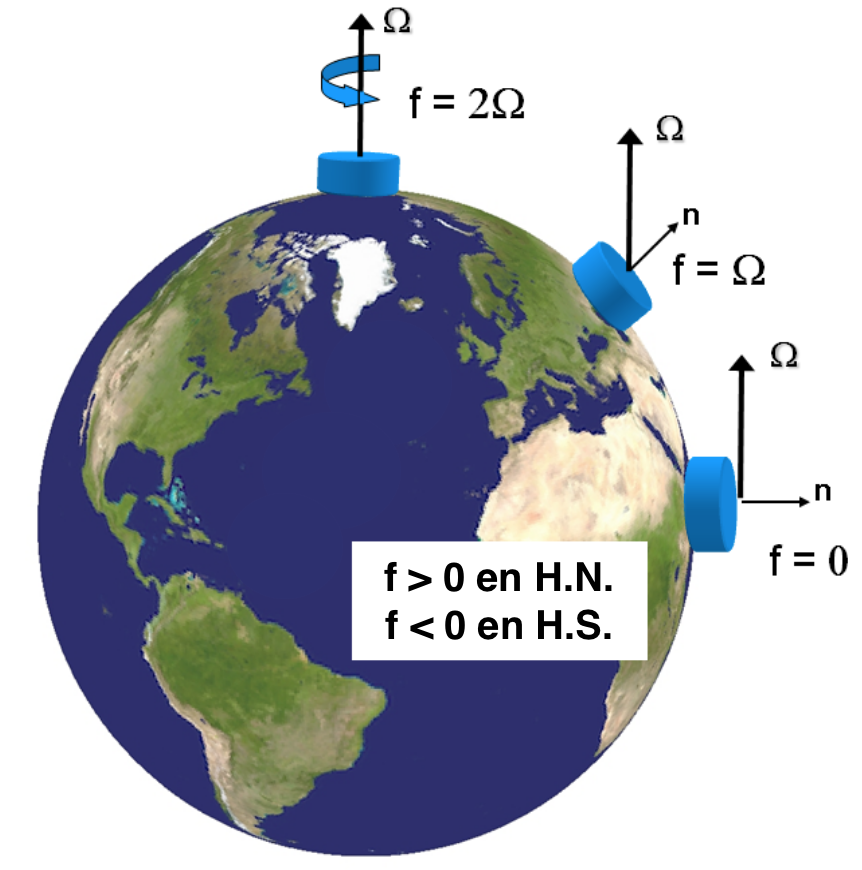

class: center, middle <br/><br/> .title[1 Introducción] .subtitle[Módulo 3: Dinámica de la Atmósfera] <br/><br/> .author[Diplomado en Meteorología y Climatología] .institution[ICAyCC] <br/> .date[6 de marzo de 2024] <br/><br/> <img style="width:100%" src="./figures/green_waves.png"> <!-- .note[Created with [{Liminal}](https://github.com/jonathanlilly/liminal) using [{Remark.js}](http://remarkjs.com/) + [{Markdown}](https://github.com/adam-p/markdown-here/wiki/Markdown-Cheatsheet) + [{KaTeX}](https://katex.org)] --> --- name: toc class: left <img style="width:50%" src="./figures/ink.jpg"> #Contenido 1. [Evaluación y mecánica del módulo](#eval) 1. [Introducción a los flujos atmosféricos](#flujos) <!-- Comment out the next slide if you don't want the Table of Contents link --> --- layout: true .toc[[✧](#toc)] --- name: eval class: left # De los profesores Profesor: [Arturo Quintanar]() **Contacto**: arturo.quintanar@atmosfera.unam.mx Profesor: [Victor Manuel Torres]() **Contacto**: victorm.torres@atmosfera.unam.mx Profesora: [Karina Ramos Musalem](https://anakarinarm.github.io/) - Física (Fac. de Ciencias, UNAM, 2013) - Doctora en Oceanografía ([Universidad de British Columbia](https://www.eoas.ubc.ca/), Vancouver, Canadá, 2020) - Investigadora Asociada C en el [ICAyCC](https://www.atmosfera.unam.mx/). **Contacto**: kramosmu@atmosfera.unam.mx --- class:left # Próximas 3 clases Clase 1 (6 mar) * Escalas de movimiento * Importancia de la rotación y estratificación * Repaso de fluidos * conservación de masa y momento Clase 2 (8 mar) * Sistemas de referencia inerciales y no inerciales * Ecuaciones de movimiento para un fluido en rotación * Ecuaciones primitivas Clase 3 (13 mar) * Aplicaciones de las ecuaciones primitivas: geostrofía y viento térmico * Repaso de cinemática de ondas --- class:left # Bibliografía sugerida * JR Holton, GJ Hakim (2012) An introduction to dynamic meteorology, 5th ed. * Cushman-Roisin y Beckers (2011) Geophysical Fluid Dynamics, 2nd ed. * Vallis, G. K. (2017). Atmospheric and oceanic fluid dynamics. Cambridge University Press * Stull, R., 2017: "Practical Meteorology: An Algebra-based Survey of Atmospheric Science" -version 1.02b. Univ. of British Columbia. 940 pp. (https://www.eoas.ubc.ca/books/Practical_Meteorology/) --- class: left # Evaluación |Rubro|Porcentaje| |::|:-:| |Quizzes|50%| |Final|50%| |Tarea|sugerida| </br> --- name: flujos class: center, middle # La atmósfera como fluído geofísico --- class: center ## ¿De qué hablamos cuando hablamos de fluidos geofísicos? <img style="width:100%" src="./figures/Nora_Ida_NOAAsatellites.jpg"> Huracanes Nora (izq.) e Ida (der.) Fuente: NOAA Satellites --- class: center count: false ## ¿De qué hablamos cuando hablamos de fluidos geofísicos? <video preload="auto" width="100%" height="auto" data-setup="{}" autoplay loop controls> <source src="./videos/jetstreamanimation_NASA.mp4" type="video/mp4" /></video> .caption[[Science on a sphere: Modelo GEOS-5 de NASA](https://sos.noaa.gov/catalog/datasets/winds-geos-5-model/). Esta simulación muestra intensidad del viento en la tropopausa de septiembre 1, 2006 a marzo 17, 2007, tiene 10 km de resolución, Goddard Earth Observing System Model, Version 5 (GEOS-5), utiliza 3750 procesadores de la supercomputadora Discover del NASA Center for Climate Simulation] --- name: fg class: left # Características de los fluidos geofísicos (FG) </br></br> * Se encuentran en un sistema de referencia en **rotación**; </br></br> * por lo regular están **estratificados**; </br></br> * En la naturaleza ocurren a "gran escala" (en un momento definiremos "gran"). Este módulo tratará de las peculiaridades que aparecen en la dinámica de la atmósfera debidas a la influencia de una, otra o ambas características. --- class: left ## Efecto de la estratificación .left-column[</br></br></br></br></br>La **estratificación** es la variación vertical de la densidad.] .right-column[] --- class: left count: false ## Efecto de la estratificación .left-column[Muevo elemento de fluido en equilibrio de $Z$ hasta $Z+h$ $\rightarrow$ **fuerza boyante** La frecuencia de oscilación$^1$.footnote[$1.$ Conocida como frecuencia de Brunt-Väisälä] del elemento de fluido está dada por: $$N^2=\frac{g}{\rho_0}\frac{\partial{\rho}}{\partial z}$$ $\uparrow N^2$ inhibe movimientos verticales y da estructura vertical al flujo.] .right-column[<img style="width:100%" src="./figures/latte_annotated.jpg">] --- class: left ## Efecto de la rotación .left-column[ $\Omega=7.2921\times10^{-5}$ rad s$^{-1}$ Agrega el término $2\vec{\Omega} \times \vec{u}$ a las ecuaciones de momento. ] .right-column[Flujos tienden a desviarse a la **derecha** en el **hemisferio norte** y a la izquierda en el hemisferio sur. **Parámetro de Coriolis** </br> $$f=2\Omega\sin{\varphi},$$ donde $\varphi$ es la latitud. Por ejemplo: En Huatulco ($\varphi=17.09^{\circ}$ N), $f=4.28\times10^{-5}$ s$^{-1}$ En Ensenada ($\varphi=30.90^{\circ}$ N), $f=7.47\times10^{-5}$ s$^{-1}$] --- class: left ## Efecto de la rotación </br> Para que el flujo sienta el efecto de la rotación, las escalas temporales deben ser del orden de un periodo de rotación. $$ \epsilon = \frac{\textrm{tiempo de una revolución}}{\textrm{tiempo en avanzar } L \textrm{ a velocidad } U} $$ $$= \frac{\frac{2\pi}{\Omega}}{\frac{L}{U}} = \frac{2\pi U}{\Omega L}.$$ Si **$\epsilon \le 1$, la rotación es importante**. Esto limita el tamaño y velocidad del flujo y nos da una definición de "gran escala". Nombre especial de $\epsilon$: *Número de Rossby* en forma $Ro=U/fL$. --- class: left # Referencias Cushman-Roisin y Beckers - Capítulos 1 y 11.